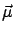
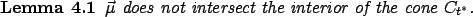
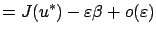
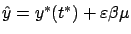
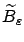
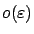
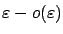

Up until now, we have not yet used the fact that  is an
optimal control and
is an
optimal control and  is an optimal trajectory. As discussed
in Section 4.2.1 and demonstrated in
Figure 4.2, optimality means that no other
trajectory
is an optimal trajectory. As discussed
in Section 4.2.1 and demonstrated in
Figure 4.2, optimality means that no other
trajectory  corresponding to another control
corresponding to another control  can reach the
line
can reach the
line  (the vertical line through
(the vertical line through
 in the
in the
 -space) at a point below
-space) at a point below  . Since the terminal cone
. Since the terminal cone
 is a linear approximation of the set of points that we can
reach by applying perturbed controls, we expect that the terminal
cone should face ``upward."
is a linear approximation of the set of points that we can
reach by applying perturbed controls, we expect that the terminal
cone should face ``upward."
To formalize this observation, consider the vector

be the ray generated by this vector (which points downward) originating at

In other words,
can in principle touch  along the
boundary, but it cannot lie inside it. We note that since
along the
boundary, but it cannot lie inside it. We note that since  is a cone,
intersects its interior if
and only if all points of
except
is a cone,
intersects its interior if
and only if all points of
except  are interior
points of
are interior
points of  .
.
Let us see what would happen if the statement of the lemma
were false and
were inside  . By construction of the
terminal cone, as explained at the end of
Section 4.2.5, there would exist a (spatial plus
temporal) perturbation of
. By construction of the
terminal cone, as explained at the end of
Section 4.2.5, there would exist a (spatial plus
temporal) perturbation of  such that the terminal point of
the perturbed trajectory
such that the terminal point of
the perturbed trajectory  would be given by
would be given by
for some (arbitrary)
 |
||
Let us try to build a more convincing argument in support of
Lemma 4.1. If the statement of the lemma is false, then we
can pick a point
on the ray
below  such that
is contained in
such that
is contained in  together with a ball of some positive radius
together with a ball of some positive radius
 around it; let us denote this ball by
around it; let us denote this ball by
 . For a
suitable value of
. For a
suitable value of  , we have
, we have

. Since the points in
; we can think of it as a ``warped" version of
away from
In the above discussion,
 was fixed; we now make it tend
to 0. The point
was fixed; we now make it tend
to 0. The point
 , which we relabel as
, which we relabel as
 to emphasize its dependence on
to emphasize its dependence on
 , will approach
, will approach
 along the ray
as
along the ray
as
 (here
is
the same fixed positive number as in the original expression for
). The ball
(here
is
the same fixed positive number as in the original expression for
). The ball
 , which now stands for the ball of
radius
, which now stands for the ball of
radius
 around
around
 , will still belong to
, will still belong to  and
consist of the points
and
consist of the points
 for each value of
for each value of
 .
Terminal points of perturbed state trajectories (the perturbations
being parameterized by
.
Terminal points of perturbed state trajectories (the perturbations
being parameterized by
 ) will still generate a ``warped
ball"
consisting of points of the
form (4.27). Figure 4.10 should help visualize
this construction.
) will still generate a ``warped
ball"
consisting of points of the
form (4.27). Figure 4.10 should help visualize
this construction.
Since the center of
 is on
below
is on
below  , the radius of
, the radius of
 is
is
 , and the ``warping" is of order
, for
sufficiently small
, and the ``warping" is of order
, for
sufficiently small
 the set
will still
intersect the ray
below
the set
will still
intersect the ray
below  . But this means that there exists a
perturbed trajectory
. But this means that there exists a
perturbed trajectory  which hits the desired terminal point
which hits the desired terminal point
 with a lower value of the cost. The resulting contradiction
proves the lemma.
with a lower value of the cost. The resulting contradiction
proves the lemma.
The above claim about a nonempty intersection between
and
seems intuitively obvious. The original
proof of the maximum principle in [PBGM62] states
that this fact is obvious, but then adds a lengthy footnote
explaining that a rigorous proof can be given using topological
arguments. A conceivable scenario that must be ruled out is one in
which the set
has a hole (or dent) in it and
the ray
goes through this hole. It turns out that this
is indeed impossible, thanks to continuity of the ``warping" map
that transforms
 to
. In fact, it can
be shown that
contains, for
to
. In fact, it can
be shown that
contains, for
 small enough, a ball centered at
small enough, a ball centered at
 whose radius is of
order
whose radius is of
order

. One quick way to prove this is by applying Brouwer's fixed point theorem (which states that a continuous map from a ball to itself must have a fixed point).